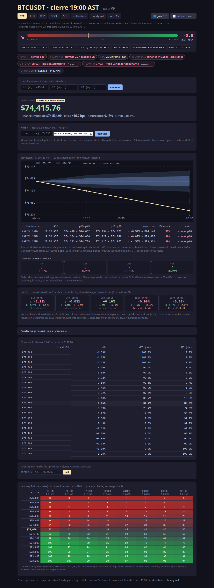
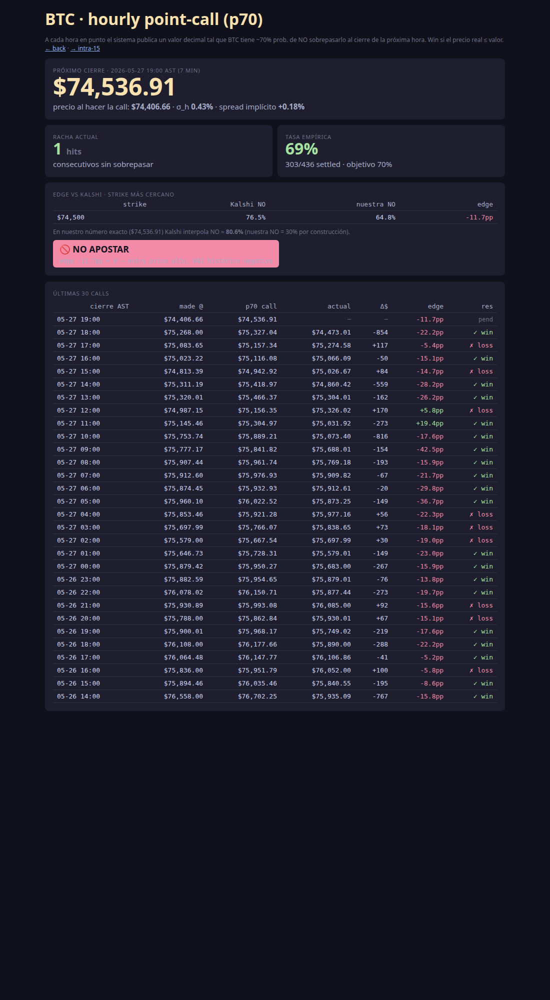
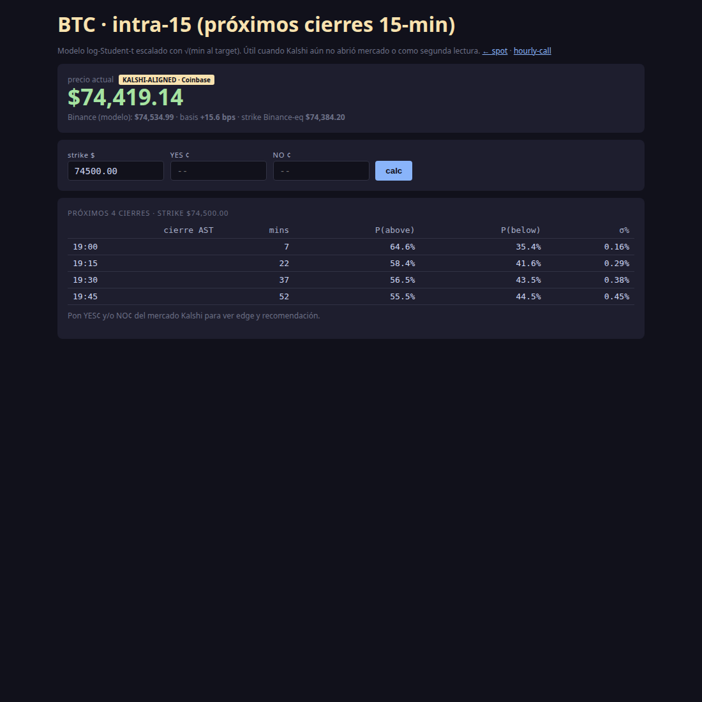
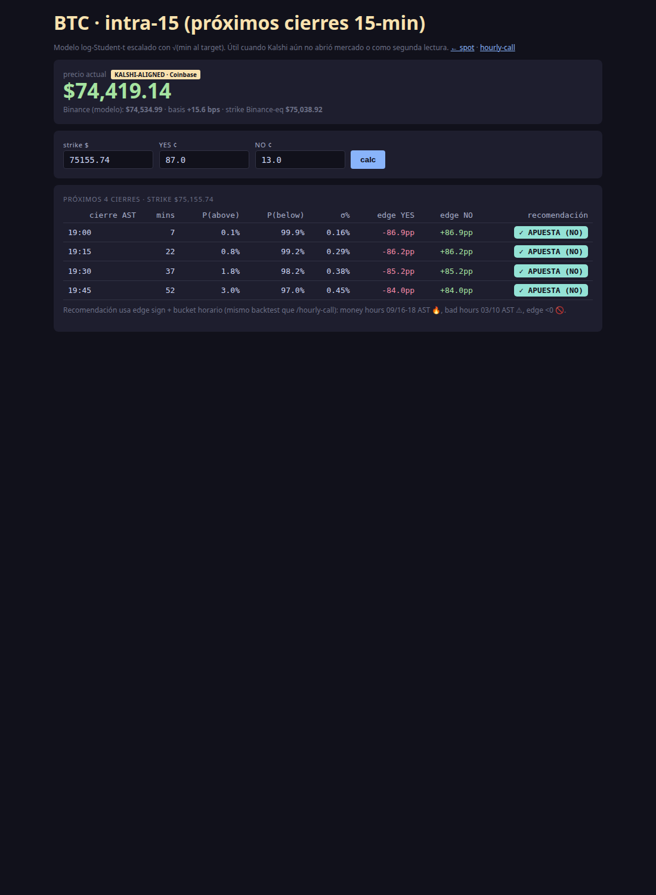
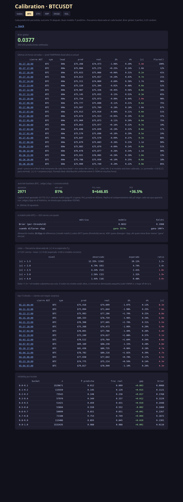

BTC Predictor — Guía rápida (para ti)
App educativa que predice el precio de Bitcoin y te ayuda a decidir si apostar
en los mercados horarios y de 15 minutos de Kalshi. Sin dinero real.
URL local: http://100.122.62.70:8001 (tienes que estar en Tailscale)
Esta guía no explica cómo funciona el modelo por dentro — para eso está
tutorial.pdf. Aquí sólo verás qué puedes hacer con cada pantalla y
cómo leer los números para tomar decisiones.
¿Qué problemas resuelve?
- ¿Va a estar el precio arriba o abajo de X a tal hora? → /hourly-call (cierre 60 min) y /intra15 (cierres de 15 min)
- ¿Vale la pena la apuesta que veo en Kalshi? → en cualquiera de las dos vistas: pega el precio YES/NO y te dice el edge y un badge de recomendación
- ¿Qué tan bien estoy acertando? → /calibration
- ¿Qué pasa si el precio sube X% en Y minutos? → / (página principal: what-if + fan chart)
1 · Página principal /

Lo que ves arriba
- Hero verde grande = precio actual de Bitcoin en Coinbase (marcado
KALSHI-ALIGNED). Este es el precio que Kalshi usa para liquidar — es el que importa para apostar.
- Binance (modelo) = el precio de la otra exchange, normalmente unos cuantos dólares arriba. Es el que el modelo usa para sus cálculos. La diferencia (
basis +XX bps) suele ser pequeña (10–25 bps).
💡 Para dummies: si Kalshi te dice "BTC ≥ $75,500" mira el precio Coinbase, no el de Binance.
Tabs arriba
BTC ETH XRP ... — cambia de cripto. Solo BTC tiene mercado Kalshi.calibration — qué tan bueno fue el modelo (sección 4)hourly-call — la apuesta horaria (sección 2)intra15 — las apuestas de 15 minutos (sección 3)
Tarjetas que te interesan
- Quantiles / niveles — el modelo dice "hay 90% de probabilidad de que BTC esté entre $X y $Y al cierre". Útil para ver si tu strike de Kalshi cae dentro o fuera del rango.
- What-if (formulario abajo) — pones un precio y una hora y te devuelve
P(above) y P(below). Sirve cuando Kalshi te ofrece un strike rarito que no aparece en los otros tabs.
- Fan chart — gráfico SVG con bandas de incertidumbre. Visualmente: cuanto más se abre el abanico, más insegura está la predicción.
- Signals / tension — resumen direccional. Score entre -5 (bearish) y +5 (bullish).
2 · /hourly-call — la apuesta de cada hora

Kalshi tiene un mercado cada hora: "¿BTC va a estar por encima de $X al cierre?". Esta vista te ayuda a decidir.
Cómo se lee
- Hero amarillo = el valor "call". El modelo dice que hay 70% de probabilidad de que BTC no sobrepase ese número al cierre de la próxima hora.
- Racha actual = cuántas calls seguidas hemos acertado (precio real ≤ call).
- Tasa empírica = % de aciertos histórico. Si está cerca de 70% el modelo va bien calibrado.
El bloque "edge vs Kalshi"
- strike = el strike más cercano de Kalshi al valor que predijimos
- Kalshi NO = lo que el mercado paga por el contrato NO
- nuestra NO = lo que el modelo cree que vale (70% por construcción)
- edge = diferencia en puntos porcentuales (pp). Positivo = el modelo cree que NO está barato → apuesta NO.
El badge de recomendación 🔥 / ✓ / ⚠ / 🚫
Basado en backtest de 414 calls:
| Badge |
Cuándo aparece |
Qué hacer |
| 🔥 APUESTA FUERTE |
edge ≥ 0 y cierre 09/16/17/18 AST (money hours, WR 88-100%) |
Apostar con confianza |
| ✓ APUESTA |
edge ≥ 0 (resto de horas) |
Apostar normalmente |
| ⚠ HORA MALA |
edge ≥ 0 pero cierre 03 o 10 AST (WR ≤50%) |
Mejor pasar |
| 🚫 NO APOSTAR |
edge < 0 (entry price alto, ROI histórico negativo) |
No apostar nunca |
⚠️ Regla dura del backtest: edge negativo siempre pierde en promedio aunque parezca que ganas seguido. El payoff no compensa porque el contrato cuesta caro.
Tabla "últimas calls"
Las últimas 30 calls con su edge y resultado. Útil para ver si el modelo está en racha o frío.
3 · /intra15 — apuestas de 15 minutos

Esta es la pantalla nueva. Kalshi a veces abre mercados cortos de 15 min (cierre 17:15, 17:30, etc.) — pero no siempre. Aquí puedes pedirle al modelo la predicción tengas mercado o no.
Para usarla sin Kalshi
- Mete un strike (ej. $75,155.74)
- Dale
calc
- Te devuelve los próximos 4 cierres de 15 min con
P(above), P(below) y σ
- Sirve para tener una intuición: "¿qué tan probable es que BTC cruce $X en la próxima hora?"
Para usarla con un mercado Kalshi abierto

- Mete strike + YES ¢ + NO ¢ (lo que veas en Kalshi)
- Dale
calc
- Ahora cada fila muestra:
- edge YES y edge NO (en pp)
- recomendación (mismo badge que /hourly-call, indica si conviene YES o NO)
💡 Truco: si YES vale 87¢ y NO vale 13¢ en Kalshi, escribe los dos. El sistema elige el lado con más edge y te lo marca entre paréntesis: 🔥 APUESTA FUERTE (NO).
Lo que dice la cabecera
- Hero Coinbase = precio Kalshi-aligned (otra vez, el que importa)
- basis = cuánto difiere Binance de Coinbase en ese momento
- strike Binance-eq = el strike que Coinbase muestra, traducido a precio Binance (para entender cómo lo "ve" el modelo)
4 · /calibration — ¿qué tan bueno es el modelo?

Vista para revisar el desempeño histórico.
Lo que importa
- Brier score — entre 0 (perfecto) y 1 (pésimo). Cualquier valor por debajo de 0.25 es razonable; por debajo de 0.20 es bueno.
- Reliability — tabla que dice "cuando el modelo dijo 70% acerté el 68% del tiempo". Si los números coinciden, está bien calibrado.
- Recent outcomes — últimas 24 calls horarias con su acierto/fallo.
- Top shocks — las predicciones donde más se equivocó. Útil para detectar regimes nuevos.
- Auto-bet backtest — qué hubiéramos ganado siguiendo las recomendaciones del badge. ROI histórico.
5 · Reglas que el backtest reveló (resumen)
Para no leer todo: estas son las reglas duras que aprendimos perdiendo dinero virtual:
✅ Apuesta si
- Edge ≥ 0 (siempre, sin excepción)
- Cierre en hora 09 / 16 / 17 / 18 AST → edge positivo aquí es 🔥
- Strike alejado del spot en mercados de cola (tipo Kalshi NO [≤X] con X bien por debajo de la mediana de modelos externos)
🚫 No apuestes si
- Edge negativo (aunque el WR parezca alto: el payoff te mata)
- Cierre en hora 03 o 10 AST (WR ≤50% histórico, evítalo)
- Modelo en racha negativa de 3+ pérdidas (debería bloquearse solo, pero revisa)
⚠️ Observación pendiente de confirmar
- Edge marginal (0 a +8pp) + trend 24h negativo (-1% o peor) → parece trampa aunque sea money hour. Tenemos un solo dato (2026-05-27 17:00), si se repite se endurece la regla.
6 · Flujo típico de uso
Mañana (chequeo general):
1. Abro /?symbol=BTCUSDT → veo el precio Coinbase, el momentum, signals
2. Voy a /hourly-call → veo si la call de la próxima hora tiene edge
Cuando aparece una apuesta en Kalshi:
1. Anoto strike, YES¢ y NO¢
2. Si es mercado horario → /hourly-call ya lo tiene calculado (mira el badge)
3. Si es mercado de 15 min → abro /intra15, meto los 3 valores, miro el badge
4. Decido según el badge:
- 🔥 → entro con confianza
- ✓ → entro
- ⚠ → paso
- 🚫 → paso (no excepciones)
Al final del día (review):
1. Voy a /calibration → veo Brier y reliability
2. Reviso "auto-bet backtest" para confirmar ROI
7 · Glosario rápido
| Término |
Qué significa |
| edge |
diferencia entre lo que paga Kalshi y lo que el modelo dice que vale (en pp) |
| strike |
el precio sobre/bajo el que se decide el mercado |
| NO/YES |
lados del mercado binario de Kalshi |
| pp |
"puntos porcentuales" (diferencia absoluta entre porcentajes) |
| AST |
hora de Puerto Rico (UTC-4, sin horario de verano) |
| money hour |
hora del día donde históricamente acertamos mucho (09/16/17/18 AST) |
| basis |
diferencia entre Binance y Coinbase, en basis points (1bp = 0.01%) |
| σ (sigma) |
desviación estándar — qué tanto puede moverse el precio |
| Brier |
métrica de qué tan bien calibrado está el modelo (menor = mejor) |
| WR |
win rate (% de aciertos) |
| ROI |
retorno sobre la inversión |
Última actualización: 2026-05-27.